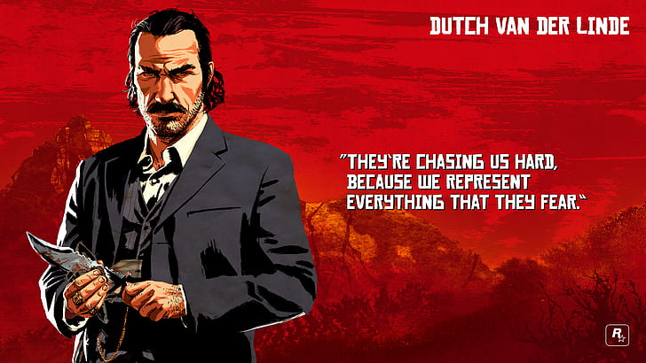

Red Dead Redemption 2
Red Dead Redemption 2 é um jogo de ação e aventura desenvolvido pela Rockstar Games e lançado em 2018. O jogo se passa no final do século XIX, no contexto do Ocidente americano, e é uma prequência direta do título Red Dead Redemption (2010)
O jogo segue Arthur Morgan, um fora da lei e membro da gangue Van der Linde, liderada por Dutch Van der Linde. A história se passa em 1899 e explora a vida da gangue enquanto ela tenta sobreviver em um mundo em rápida mudança, enfrentando a pressão de autoridades, inimigos e conflitos internos.

Jogabilidade:
Principais Personagens
John Marston
 .
.
Arthur Morgan

dutch van der Linde
